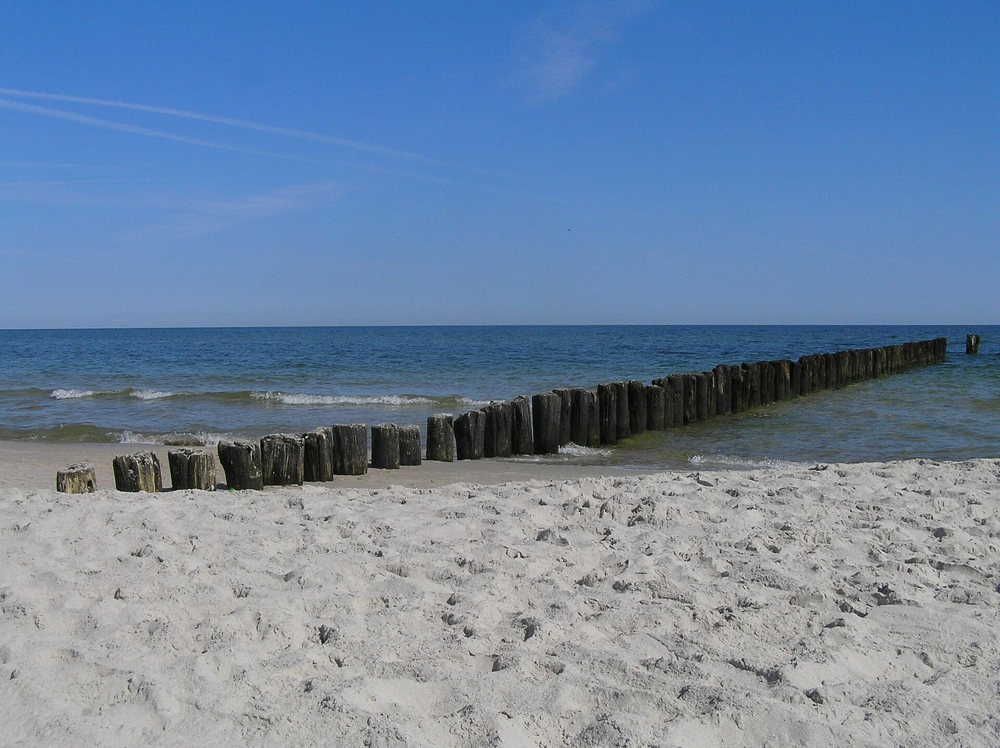

Chałupy
Péninsule de Hel, Poméranie, Pologne · kitesurf, windsurf

Village de la presqu’île de Hel bordé par la baie de Puck, un plan d’eau peu profond et plat très prisé pour apprendre le kitesurf et le windsurf. Les écoles s’alignent le long des campings côté baie.
- Lieu
- Péninsule de Hel, Poméranie, Pologne
- Niveau
- Débutant
- Activités
- kitesurf, windsurf
- Type d'eau
- Mer / océan
- Coordonnées
- 54.76, 18.50 (position approximative du secteur)
Dangers à connaître
- Plan d’eau très fréquenté l’été : garde tes distances avec les autres ailes.
- Bancs de sable et zones très peu profondes : attention aux chutes.
Le conseil d'Ocean Buddy
Apprends côté baie, où l’on a pied loin du bord, et laisse la côte de la Baltique aux jours calmes ou aux baigneurs.
Ouvrir dans Ocean Buddy Télécharger sur l'App Store
Source : Fiche Ocean Buddy · septembre 2026 · à vérifier localement.